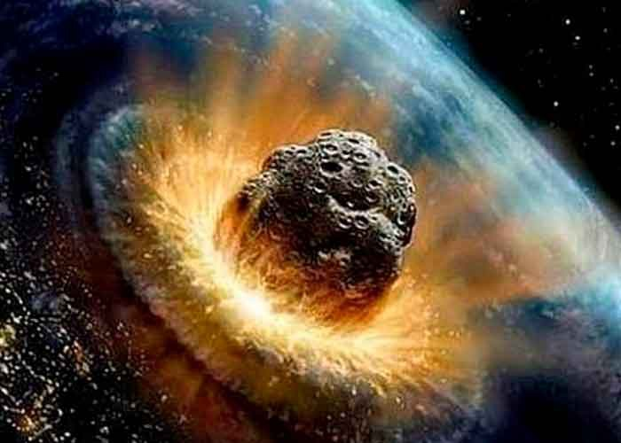
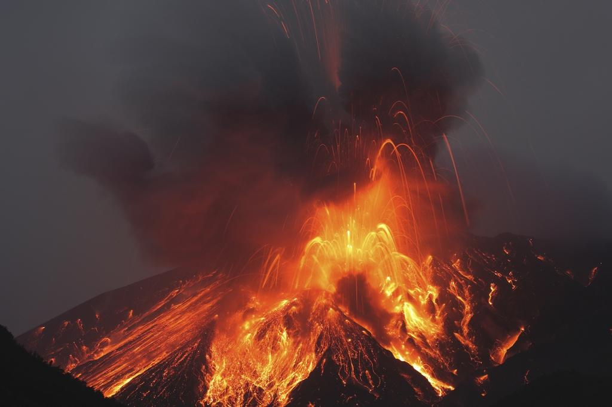
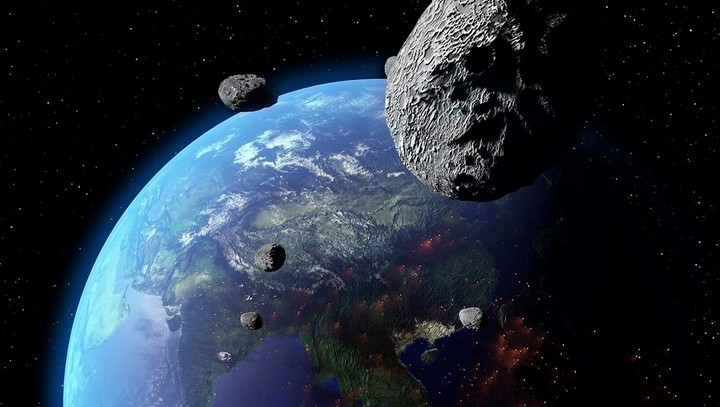

.
Durante años, los científicos han debatido sobre la causa de la extinción del Cretácico entre el impacto de un gran asteroide o una época de gran actividad volcánica. Ahora, nuevas pistas arrojan luz sobre el final de los dinosaurios.
Al final del Cretácico, hace 66 millones de años, el impacto de un asteroide gigantesco en Chicxulub, en la costa de México, oscureció los cielos y enfrió el planeta, matando a todos los dinosaurios salvo las aves.
Hace 65 millones de años se extinguió el último dinosaurio. Los gigantescos mosasaurios y plesiosaurios en los mares y los pterosaurios en los cielos. Muchas familias de braquiópodos y esponjas de mar desaparecieron. Los restantes ammonites de concha dura se esfumaron. Se redujo la gran diversidad de tiburones y el plancton, la base de la cadena alimenticia del océano, se vio muy afectado. También se marchitó la mayor parte de la vegetación. En resumen, se extinguieron más de la mitad de las especies que habitaban el mundo.
Los restos de estos animales casi mitológicos siguen fascinando a expertos y al gran público. Algunas zonas del mundo tienen toda una industria turística en torno a los vestigios, sobre todo fósiles, que nos han llegado. Pero siguen siendo muchas las incognitas y cada descubrimiento aporta una pieza más a un puzzle del que apenas conocemos los bordes.
¿Qué causó esta masiva extinción que marca el final del Cretácico y el comienzo del Paleógeno? Los científicos han investigado durante muchos años por qué murieron estos animales, mientras otros sauropsidos, como las tortugas, los cocodrilos y algunos mamíferos sobrevivieron. Las aves se libraron. Al igual que las serpientes, bivalvos y los erizos y estrellas de mar. Incluso las plantas resistentes capaces de soportar climas extremos.
Durante décadas, los científicos han coincidido en torno a dos hipótesis que podrían explicar la extinción del Cretácico: un impacto extraterrestre, por ejemplo un asteroide o un cometa, o un período de gran actividad volcánica. Cualquiera de los dos escenarios habría ahogado los cielos con restos que privaron a la Tierra de la energía del sol, impidiendo la fotosíntesis y extendiendo la destrucción arriba y abajo de la cadena alimenticia. Una vez que se asentó el polvo, los gases de efecto invernadero bloqueados en la atmósfera habrían provocado que se disparara la temperatura, un repentino cambio climático acabó con mucho de la vida que logró sobrevivir a la prolongada oscuridad.
Ahora, nuevas pistas arrojan información sobre lo que ocurrió durante el impacto del asteroide que acabó con los dinosaurios hace unos 66 millones de años. Según unos pequeños fragmentos de roca hallados en Texas, el asteroide golpeó con tanta fuerza que vaporizó un grueso lecho de rocas que había debajo, arrojando gas junto a una cortina de fragmentos rocosos que salieron despedidos de la superficie. La temperatura se elevó a unos 155 grados centígrados, por lo que la zona de devastación llegó a más de 1600 kilómetros del centro del cráter en minutos.
Sin embargo, un equipo internacional de investigadores de la Universidad de Yale publicaron un estudio en la revista Science donde afirmaron que el impacto ambiental de las erupciones masivas ocurrió mucho antes del evento de las extinción y, por tanto, no pudo ser la causa.
La teoría de los volcanes surgió a raíz del estudio de un período de gran actividad volcánica que también ocurrió hace 65 millones de años y podría haber extendido iridio por todo el planeta, junto con el polvo que ocultaba la luz solar y los gases de efecto invernadero. Algunos científicos creían que ambas podían haber contribuido a la extinción, y otros sugerían que la causa real fue el cambio del clima y el aumento del nivel del mar.
La teoría del impacto extraterrestre proviene del descubrimiento de que un estrato de roca que data precisamente de la época de la extinción es rico en iridio. Este estrato se encuentra en todo el planeta, en la tierra y en los océanos. El iridio es raro en la Tierra pero se encuentra en los meteoritos con la misma concentración que en este iridio.
Esto condujo a los científicos a afirmar que el iridio se esparció por el planeta cuando un asteroide impactó en la península del Yucatán, en México. Un cráter de 180 kilómetros de ancho llamado Chicxulub, se ha descubierto desde entonces y se ha fijado su antigüedad en 65 millones de años. Muchos científicos creen que la lluvia radiactiva causada por el impacto mató a los dinosaurios.
Según un estudio publicado en Scientific Reports en 2017, la roca espacial impactó en el peor lugar: contra una roca rica en hidrocarburos, expulsando a la atmósfera hollín suficiente como para provocar un enfriamiento global extremo. El impacto excavó un cráter de aproximadamente 193 kilómetros de ancho en la corteza terrestre y dio en el lugar exacto y en el ángulo preciso para despedir cantidades colosales de gases refrigerantes y hollín a la atmósfera superior. El equipo de investigadores afirmó que solo el 13 por ciento de la superficie terrestre está compuesta por rocas que podrían haber generado tal cantidad de hollín.
"Es un estudio fascinante que argumenta que pese al gran tamaño del asteroide, las probabilidades de una extinción en masa en sí eran bajas", afirma Paul Chodas, director del Centro de Estudios de Objetos Próximos a la Tierra del JPL de la NASA, en este artículo de National Geographic.
Sin embargo, según un reciente estudio publicado en Nature Communications en junio de 2021, antes de que el asteroide provocase su extinción, los dinosaurios ya estaban en declive. "La cuestión de por qué los dinosaurios no aviares se extinguieron hace 66 millones de años sigue sin resolverse debido a la tosquedad del registro fósil", afirma el estudio. "Una extinción repentina provocada por un asteroide es la hipótesis más aceptada, pero se debate si los dinosaurios estaban en declive o no antes del impacto".
Los investigadores rastrearon a lo largo de millones de años (desde hace160 a 66 millones de años) las especies que aparecieron y las que desaparecieron y estimaron las tasas de especiación y extinción a lo largo del tiempo. Los resultados muestran que 10 millones de años antes del impacto del asteroide, los dinosaurios ya estaban en declive a nivel mundial, afectando tanto a carnívoros como los tiranosaurios, como a grupos herbívoros, como los triceratops.
Un estudio publicado en octubre de 2021, afirmó que los volcanes podrían haber ayudado a restaurar la vida tras el impacto del asteroide que acabó con los dinosaurios, pero aún no hay consenso científico al respecto. Al liberar más de 830 000 kilómetros cúbicos de lava y bombeó gases que alteraron el clima, los investigadores se preguntan si estos volcanes, llamados traps del Decán, también contribuyeron a la devastación de la vida.
Sin embargo, las simulaciones del estudio revelaron que los traps del Decán podrían haber hecho la Tierra más hospitalaria, no menos. "Cuando tomamos en cuenta la desgasificación de los magmas que se congelaron debajo de la superficie en lugar de hacer erupción, descubrimos que las trampas Deccan podrían haber liberado suficiente CO2 para explicar este evento de calentamiento", afirmó en un comunicado Andrés Hernández Nava, autor del estudio.
Aún queda mucho por estudiar para determinar qué papel tuvieron los volcanes en aquel momento de la historia del planeta y comprender cómo se desarrolló la extinción masiva de los dinosaurios. Sin embargo, este reciente estudio abre una nueva puerta al conocimiento sobre el papel del carbono de los magmas durante algunas de las erupciones volcánicas más grandes de la Tierra.
En agosto de 2022, otro estudio publicado en la revista Science Advances apuntaba a que en la costa de África Occidental hay indicios de que la hubo un segundo impacto de otro asteroide gigantesco.
El equipo de investigadores descubrió un posible cráter de unos 8 kilómetros de ancho, revelado en estudios sísmicos del fondo marino. El cráter, bautizado como Nadir por un volcán submarino cercano, parece haber sido tallado por el impacto de una roca espacial de al menos 400 metros de ancho, y puede haberse formado más o menos al mismo tiempo que el cráter de Chicxulub.
"Mucha gente se ha preguntado: ¿Cómo pudo el impacto de Chicxulub (aunque enorme) ser tan globalmente destructivo?", dice la autora del estudio, Veronica Bray, científica planetaria de la Universidad de Arizona. "Podría ser que tuviera ayuda".
El objeto que creó Nadir habría sido considerablemente más pequeño que el impactador de Chicxulub, por lo que sus efectos fueron probablemente regionales. Pero si se confirma, el segundo impacto de un meteorito en rápida sucesión podría haber asestado un doble golpe en la catástrofe global de finales del Cretácico, según el estudio. En una de las hipótesis, el par de asteroides podría provenir de un único cuerpo madre que se fracturó en dos antes de colisionar con la atmósfera terrestre y golpear el suelo a más de 5000 kilómetros de distancia.
